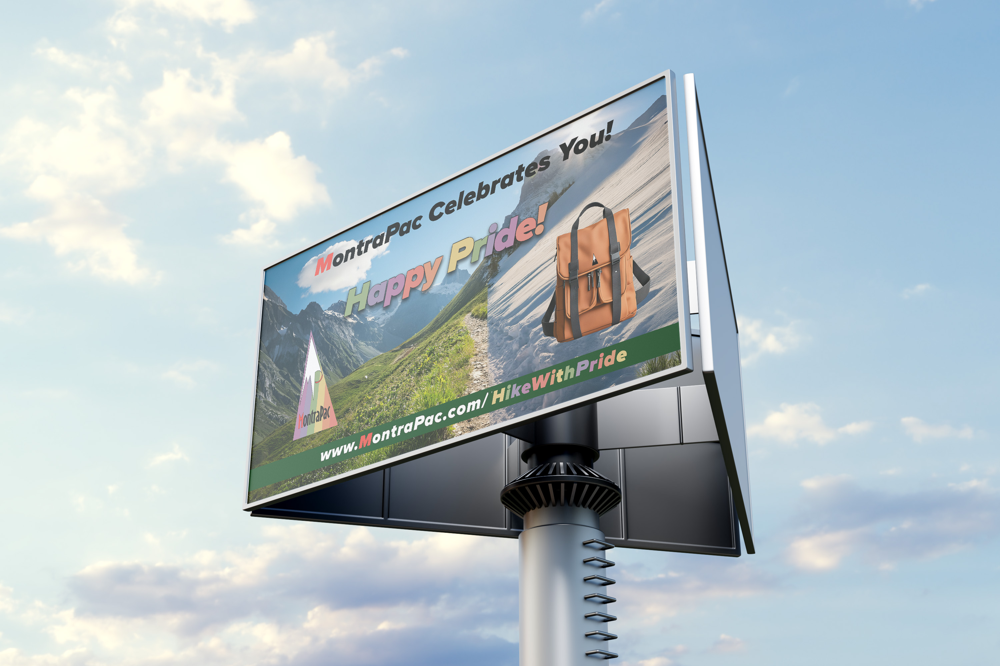
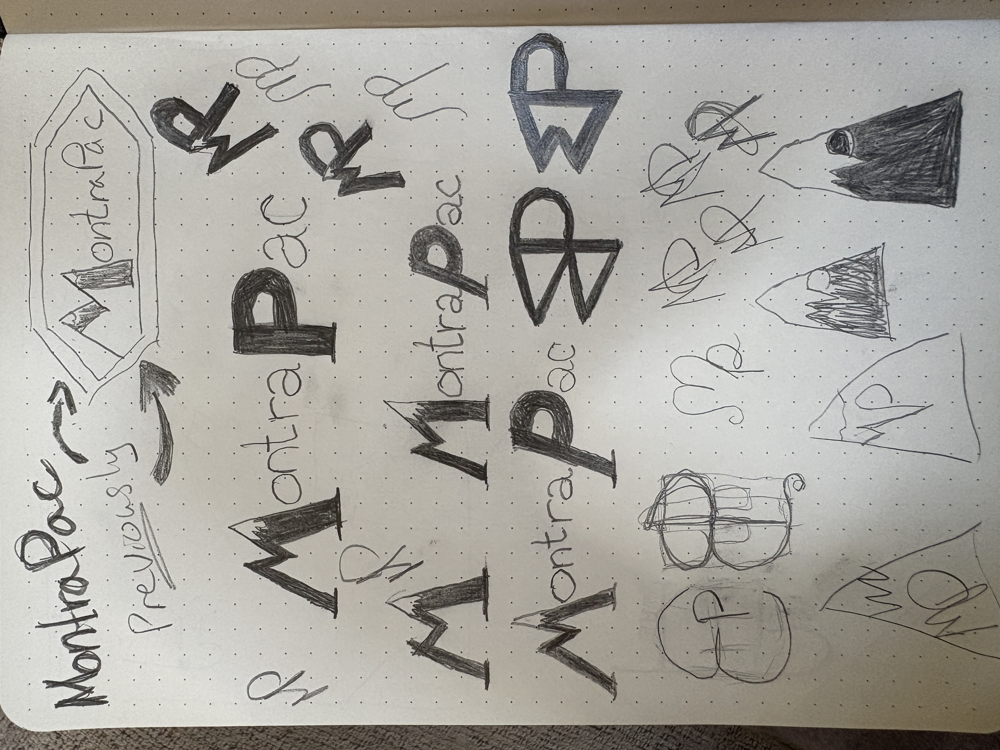
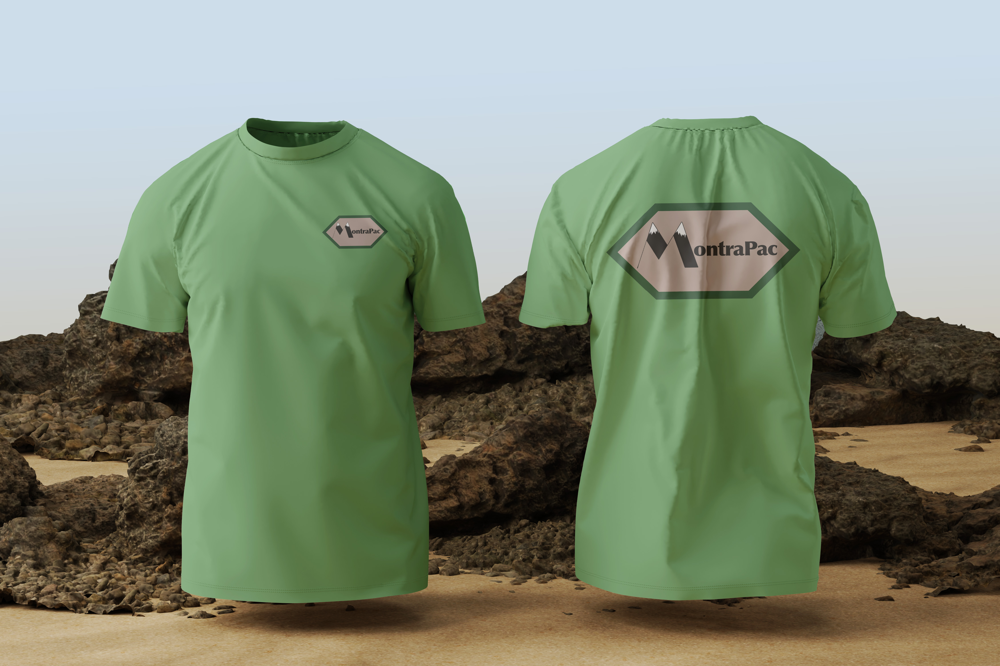
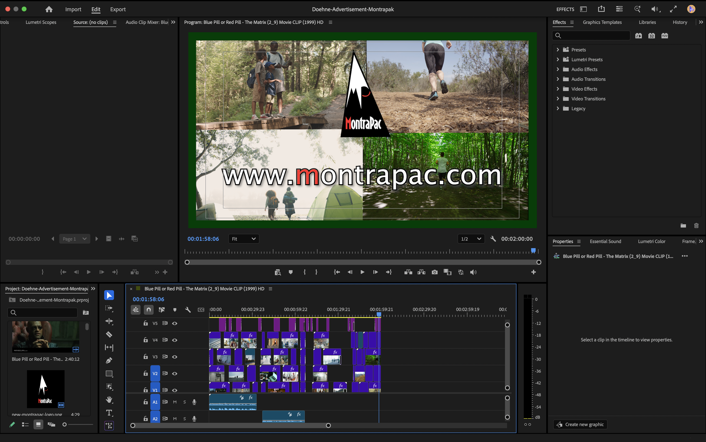
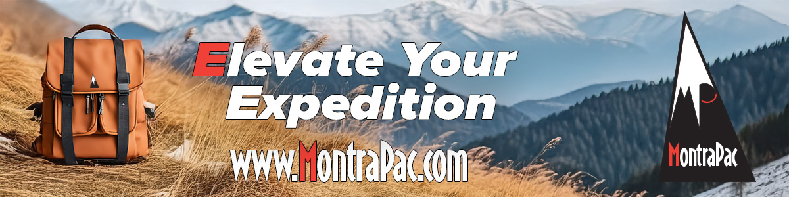
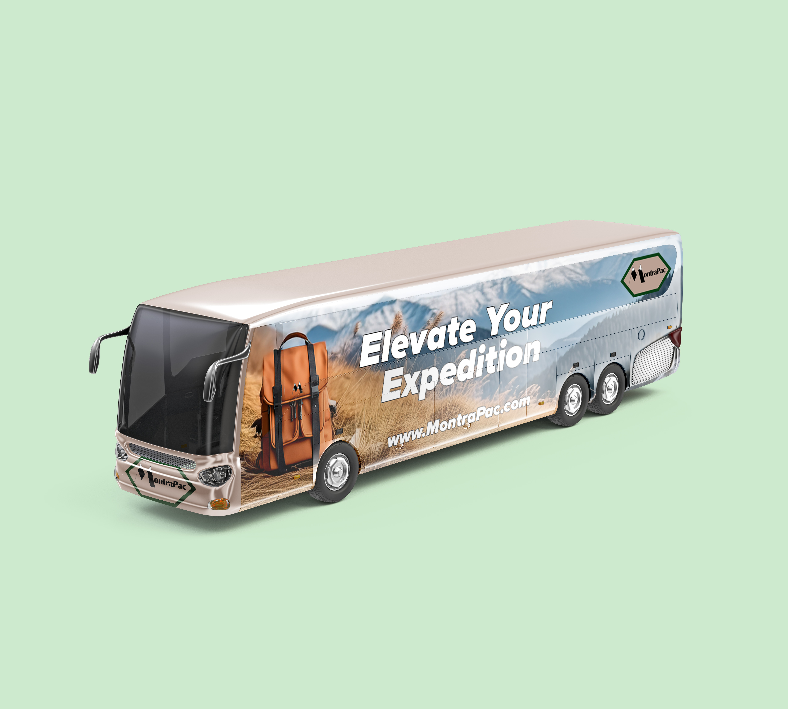
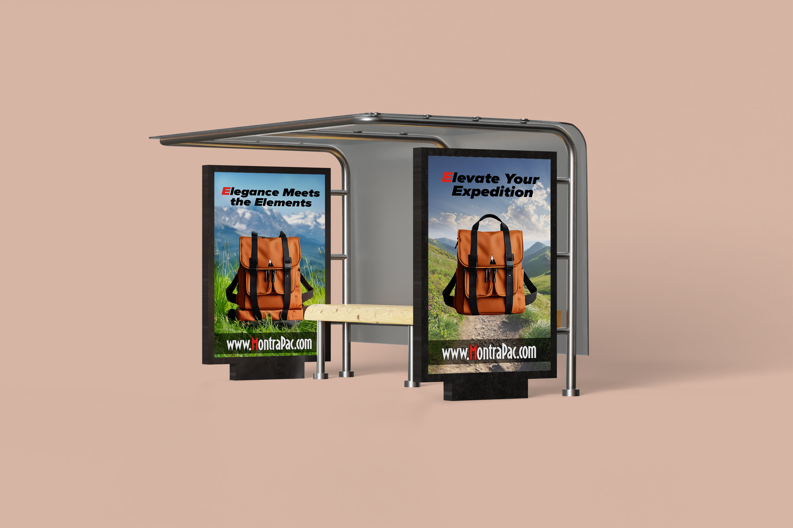
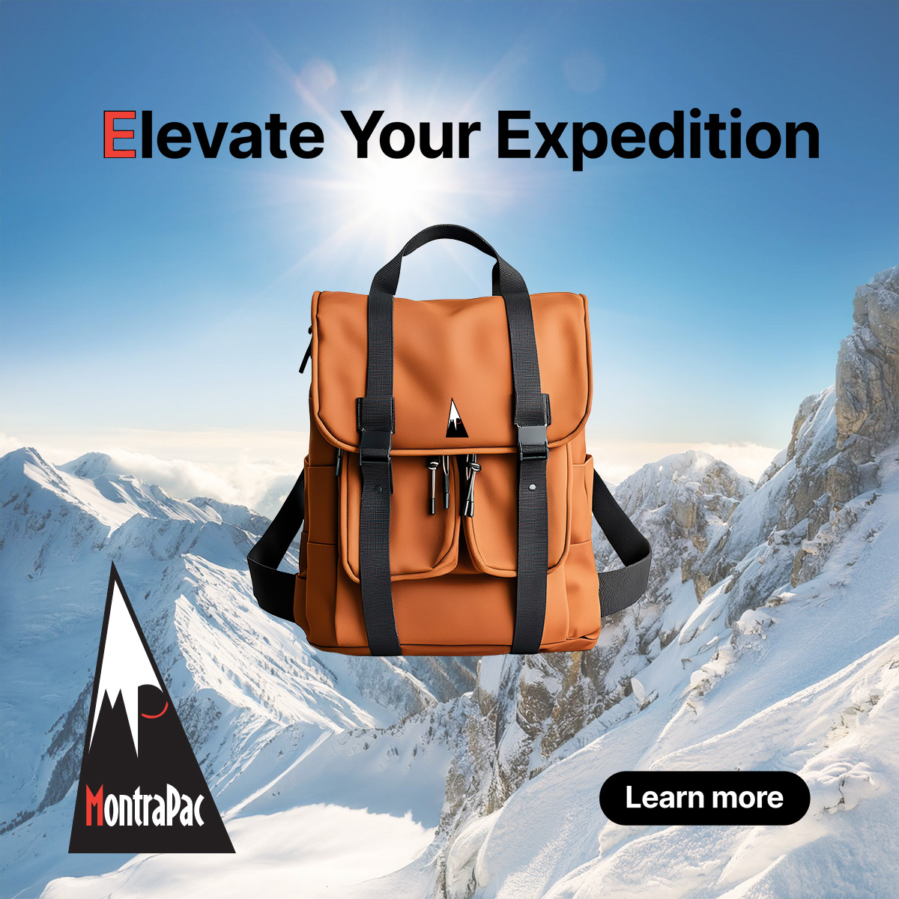

SOFTWARE
Adobe Illustrator
Adobe Photoshop
Adobe InDesign
Adobe After Effects
Adobe Premiere Pro
MY ROLE
Brand Identity Design
Packaging Design
Marketing Design
Motion Design
DELIVERABLES
Logo & Identity
Advertising Campaigns
Apparel Applications
Motion Advertisement
TOOLS & CREDITS
Fictional brand
Adobe Certificate Program
Envato Elements licensed assets
Film dialogue excerpt: The Matrix (1999)
Leave the ordinary behind.
MontraPac is a conceptual outdoor lifestyle brand built around the idea that adventure begins when routine ends.
The identity pairs a mountain-inspired mark with a bold wordmark and a distinctive red accent. Outdoor photography connects the brand to the landscapes and experiences its products are designed to accompany.

Built for the journey.
A flexible visual system balances rugged materials, confident typography, and a memorable accent color.
A mark with a hidden detail.
The mountain symbol incorporates a subtle MP, while the red accent helps reveal the hidden letterform. The black-and-white core identity keeps the logo versatile across product, apparel, and advertising applications.
Black · White · Signal red · Leather brown

Choose a different path.
A television advertisement contrasts the pace of everyday work with the freedom of getting outside.

Adventure, everywhere.
From public spaces to digital campaigns, the system adapts to different environments while keeping the product and landscape at the center.

Digital campaign · Outdoor storytelling



Ready to take your brand somewhere new?
LET'S TALK